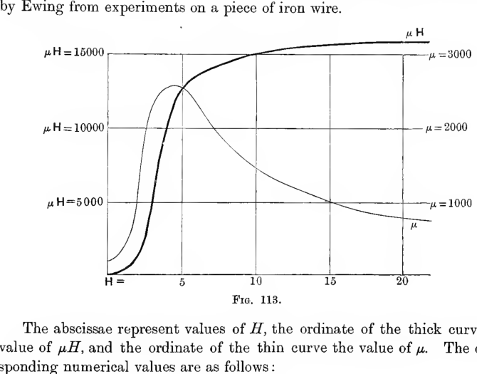
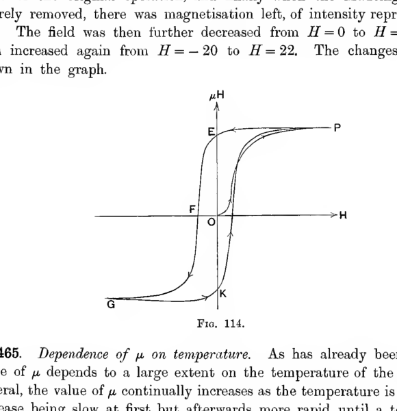
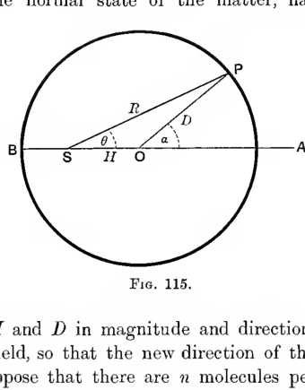
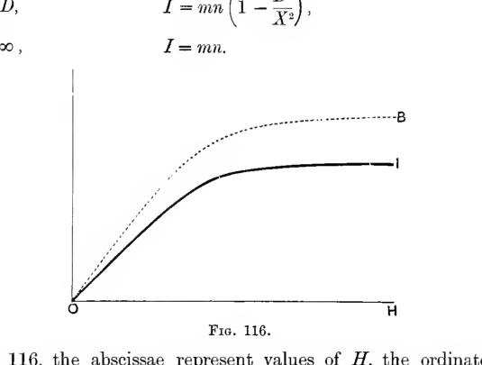
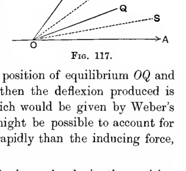

Chapter XII#
Induced Magnetism#
Physical Phenomena.#
458. Reference has already been made to the well-known fact that a magnet will attract small pieces of iron or steel which are not themselves magnets. Here we have a phenomenon which at first sight does not seem to be explained by the law of the attractions and repulsions of magnetic poles. It is found, however, that the phenomenon is due to a magnetic “induction” of a kind almost exactly similar to the electrostatic induction already discussed. It can be shewn that a piece of iron or steel, placed in the presence of a magnet, will itself become magnetised. Temporarily, this piece of iron or steel will be possessed of magnetic poles of its own, and the system of attractions and repulsions between these and the poles of the original permanent magnet will account for the forces which are observed to act on the metal.
It has, however, been seen that pairs of corresponding positive and negative poles cannot be separated by more than molecular distances, so that we are led to suppose that each particle of the body in which magnetism is induced must become magnetised, the adjacent poles neutralising one another as in a permanent magnet.
Taking this view, it will be seen that the attraction of a magnet for an unmagnetised body is analogous to the attraction of an electrified body for a piece of dielectric (§ 197), rather than to its attraction for an uncharged conductor. The attraction of a charged body for a fragment of a dielectric has been seen to depend upon a molecular phenomenon taking place in the dielectric. Each molecule becomes itself electrified on opposite faces, with charges of opposite sign, these charges being equal and opposite so that the total charge on any molecule is nil. In the same way, when magnetism is induced in any substance, each molecule of the substance must be supposed to become a magnetic particle, the total charge of magnetism on each particle being nil. It follows that the attraction of a magnet for a non-magnetic body is merely the aggregate of the attractive forces acting on the different individual particles of the body.
459. Confirmation of this view is found in the fact that the intensity of the attraction exerted by a magnet on a non-magnetised body depends on the material of the latter. The significance of this fact will, perhaps, best be realised by comparing it with the corresponding fact of electrostatics. When an uncharged conductor is attracted by a charged body, the phenomena in the former body which lead to this attraction are mass-phenomena: currents of electricity flow through the mass of the body until its surface becomes an equipotential. Thus the attraction depends solely upon the shape of the body and not upon its structure. On the other hand, the phenomena which lead to the attraction of a fragment of dielectric are, as we have seen, molecular phenomena. They are conditioned by the shape and arrangement of the molecules, with the result that the total force depends on the nature of the dielectric material.
All magnetic phenomena occurring in material bodies must be molecular, as a consequence of the fact that corresponding positive and negative poles cannot be separated by more than molecular distances. Hence we should naturally expect to find, as we do find, that all magnetic phenomena in material bodies, and in particular the attraction of unmagnetised matter by a magnet, would depend on the nature of the matter. There would be a real difficulty if the attraction were found to depend only on the shape of the bodies.
460. The amount of the action due to magnetic induction varies enormously more with the nature of the matter than is the case with the corresponding electric action. Among common substances the phenomenon of magnetic induction is not at all well-marked except in iron and steel. These substances shew the phenomenon to a degree which appears very surprising when compared with the corresponding electrostatic phenomenon. After these substances, the next best for shewing the phenomena of induction are nickel and cobalt, although these are very inferior to iron and steel. It is worth noticing that the atomic weights of iron, nickel and cobalt are very close together, and that the three elements hold corresponding positions in the table of elements arranged according to the periodic law.
It has recently been found that certain rare metals shew magnetic induction to an extent comparable with iron, and that alloys can be formed to shew great powers of induction although the elements of which these alloys are formed are almost entirely non-magnetic.
It appears probable that all substances possess some power of magnetic induction, although this is generally extremely feeble in comparison with that of the substances already mentioned. In some substances, the effect is of the opposite sign from that in iron, so that a fragment of such matter is repelled from a magnetic pole. Substances in which the effect is of the same kind as in iron are called paramagnetic, while substances in which the effect is of the opposite kind are called diamagnetic.
The phenomenon of magnetic induction is much more marked in paramagnetic, than in diamagnetic, substances. The most diamagnetic substance known is bismuth, and its coefficient of susceptibility (§ 461, below) is only about \(\tfrac{1}{10^9}\) of that of the most paramagnetic samples of iron.
Iron \(= 55\!\cdot\!5\), nickel \(= 58\!\cdot\!3\), cobalt \(= 58\!\cdot\!56\).
\dagger For an account of the composition and properties of Heusler’s alloys, see a paper by J. C. McLennan, Phys. Review, Vol. 24, p. 449.
Coefficients of Susceptibility and Permeability.#
461. When a body which possesses no permanent magnetism of its own is placed in a magnetic field, each element of its volume will, for the time it remains under the influence of the magnetic field, be a magnetic particle. If the body is non-crystalline the direction of the induced magnetisation at any point will be that of the magnetic force at the point. Thus if \(H\) denote the magnetic force at any point, we can suppose that the induced magnetism, of an intensity \(I\), has its direction the same as that of \(H\).
Thus if \(\alpha\), \(\beta\), \(\gamma\) are the components of magnetic force, and \(A\), \(B\), \(C\) the components of induced magnetisation, we shall have equations of the form
the quantity \(\kappa\) being the same in each equation because the directions of \(I\) and \(H\) are the same.
The quantity \(\kappa\) is called the magnetic susceptibility.
If the body has no permanent magnetisation, the whole components of magnetisation are the quantities \(A\), \(B\), \(C\) given by equations (390), and the components of induction are given (cf. equations (359)) by
If we put
we have
and \(\mu\) is called the magnetic permeability.
462. The quantities \(\kappa\) and \(\mu\) are by no means constant for a given substance. Their value depends largely upon the physical conditions, particularly the temperature, of the substance, upon the strength of the magnetic field in which the substance is placed, and upon the previous magnetic experiences of the substance in question.
We pass to the consideration of the way in which the magnetic coefficients vary with some of these circumstances. As \(\kappa\) and \(\mu\) are connected by a simple relation (equation (391)), it will be sufficient to discuss the variations of one of these quantities only, and the quantity \(\mu\) will be the most convenient for this purpose. Moreover, as the phenomenon of induced magnetisation is almost insignificant in all substances except iron and steel, it will be sufficient to consider the magnetic phenomena of these substances only.
463. Dependence of \(\mu\) on \(H\). The way in which the value of \(\mu\) depends on \(H\) is, in its main features, the same for all kinds of iron. For small forces, \(\mu\) is a constant, for larger forces \(\mu\) increases, finally it reaches a maximum, and after this decreases in such a way that ultimately \(\mu H\) approximates to a constant value, known as the “saturation” value. This is represented graphically in a typical case in fig. 113, which represents the results obtained by Ewing from experiments on a piece of iron wire.

A graph with horizontal axis \(H\) shows two curves for iron wire. The thick curve, labelled by values of \(\mu H\) on the left and ending near \(\mu H = 15000\), rises steeply and then levels off toward saturation. A thinner curve, labelled by values of \(\mu\) on the right, rises to a peak at moderate field strength and then declines as \(H\) increases. The figure visually contrasts induction approaching a limiting saturation while permeability itself first grows and then falls.
The abscissae represent values of \(H\), the ordinate of the thick curve the value of \(\mu H\), and the ordinate of the thin curve the value of \(\mu\). The corresponding numerical values are as follows:
\(H\) |
\(\mu H\) |
\(\mu\) |
\(H\) |
\(\mu H\) |
\(\mu\) |
|---|---|---|---|---|---|
0.32 |
40 |
120 |
5.17 |
12680 |
2450 |
0.84 |
170 |
200 |
6.20 |
13640 |
2200 |
1.37 |
420 |
310 |
7.94 |
14510 |
1830 |
2.14 |
1170 |
550 |
9.79 |
14980 |
1530 |
2.67 |
3710 |
1390 |
11.57 |
15230 |
1320 |
3.24 |
7300 |
2250 |
15.06 |
15570 |
1030 |
3.89 |
9970 |
2560 |
19.76 |
15780 |
800 |
4.50 |
11640 |
2590 |
21.70 |
15870 |
730 |
464. Retentiveness and Hysteresis. It is found that after the magnetising force is removed from a sample of iron, the iron still retains some of its magnetism. Here we have a phenomenon similar to the electrostatic phenomenon of residual charge already described in § 397.
Fig. 114 is taken from a paper by Prof. Ewing (Phil. Trans. Roy. Soc. 1885). The abscissae represent values of \(H\), and ordinates values of \(B\), the induction. The magnetic field was increased from \(H = 0\) to \(H = 22\), and as \(H\) increased the value of \(B\) increased in the manner shown by the curve \(OP\) of the graph. On again diminishing \(H\) from \(H = 22\) to \(H = 0\), the graph for \(B\) was found to be that given by the curve \(PE\). Thus during this operation there was always more magnetisation than at the corresponding stage of the original operation, and finally when the inducing field was entirely removed, there was magnetisation left, of intensity represented by \(OE\). The field was then further decreased from \(H = 0\) to \(H = -20\), and then increased again from \(H = -20\) to \(H = 22\). The changes in \(B\) are shown in the graph.

A hysteresis loop is plotted with \(H\) along the horizontal axis and \(\mu H\) or induction vertically. Starting from the origin, the curve rises sharply toward the point \(P\). On reducing the field it follows a distinct return path through \(E\), leaving a positive remanent intercept when \(H=0\). The loop then extends into negative values through \(G\) and \(K\), showing the lag of magnetisation behind the applied field.
465. Dependence of \(\mu\) on temperature. As has already been said, the value of \(\mu\) depends to a large extent on the temperature of the metal. In general, the value of \(\mu\) continually increases as the temperature is raised, this increase being slow at first but afterwards more rapid, until a temperature known as the “temperature of recalescence” is reached. This temperature has values ranging from \(600^\circ\) to \(700^\circ\) for steel and from \(700^\circ\) to \(800^\circ\) for iron. This temperature takes its name from the circumstance that a piece of metal cooling through this temperature will sink to a dull glow before reaching it, and will then become brighter again on passing through it.
After passing the temperature of recalescence, the value of \(\mu\) falls with extreme rapidity, and at a temperature only a few degrees above this critical point, appears to be almost completely non-magnetic.
For paramagnetic substances, it appears to be a general law that the susceptibility \(\kappa\) varies inversely as the absolute temperature (Curie’s Law).
Mathematical Theory.#
466. If \(\Omega\) is the magnetic potential, supposed to be defined at points inside magnetic matter by equation (348), we have, as in equations (341) (cf. § 430), \(\alpha = -\dfrac{\partial \Omega}{\partial x}\), etc., so that
The quantities \(a\), \(b\), \(c\), as we have seen (§ 434), satisfy
at every point, and
where the integration is taken over any closed surface. In terms of the potential, equation (393) becomes
while equation (394) becomes
If \(\mu\) is constant throughout any volume, equation (395) becomes
Thus inside a mass of homogeneous non-magnetised matter, the magnetic potential satisfies Laplace’s Equation.
467. At a surface at which the value of \(\mu\) changes abruptly we may take a closed surface formed of two areas fitting closely about an element \(dS\) of the boundary, these two areas being on opposite sides of the boundary. On applying equation (396), we obtain
where \(\mu_1\), \(\mu_2\) are the permeabilities on the two sides, and \(\dfrac{\partial}{\partial \nu_1}\), \(\dfrac{\partial}{\partial \nu_2}\) denote differentiations with respect to normals to the surface drawn into the two media respectively.
Equations (397) and (395) (or (396)), combined with the condition that \(\Omega\) must be continuous, suffice to determine \(\Omega\) uniquely. The equations satisfied by \(\Omega\), the magnetic potential, are exactly the same as those which would be satisfied by \(V\), the electrostatic potential, if \(\mu\) were the inductive capacity of a dielectric. Thus the law of refraction of lines of magnetic induction is exactly identical with the law of refraction of lines of electric force investigated in § 133, and figures (43) and (78) may equally well be taken to represent lines of magnetic induction passing from one medium to a second medium of different permeability.
468. At any external point \(Q\), the magnetic potential of the magnetisation induced in a body in which \(\mu\) and \(\kappa\) have constant values is, by equation (342),
Transforming by Green’s Theorem,
shewing that the potential is the same if there were a layer of magnetic matter of surface density \(-\kappa \dfrac{\partial \Omega}{\partial n}\) spread over the surface of the body. This is Poisson’s expression for the potential due to induced magnetism.
We can also transform equation (398) into
shewing that the potential at any external point \(Q\) of the induced magnetism is the same as if there were a magnetic shell of strength \(-\kappa \Omega\) coinciding with the surface of the body.
469. Body in which permanent and induced magnetism coexist. If a permanent magnet has a permeability different from unity, we shall have a magnetisation arising partly from permanent and partly from induced magnetism. If \(\kappa\) is the susceptibility and \(I\) the intensity of the permanent magnetisation at any point, the components of the total magnetisation at any point will be
and the components of induction are
For such a substance, it is clear that equations (395) and (396) will not in general be satisfied.
Energy of a Magnetic Field.#
470. To obtain the energy of a magnetic field in which both permanent and induced magnetism may be present, we return to the general equation obtained in § 451,
On substituting for \(a\), \(b\), \(c\) from equations (402), this becomes
Whether or not induced magnetism is present, it is proved, in § 448, that the energy of the field is
where the integral is taken through all space. This is equal to \(-\dfrac{1}{8\pi}\) times the first term in equation (404). Thus
This could have been foreseen from analogy with the formula
which gives the energy of an electrostatic field.
From formula (405) we see that the energy of a magnetic field may be supposed spread throughout the medium, at a rate \(\dfrac{\mu H^2}{8\pi}\) per unit volume.
Mechanical Forces in the Field.#
471. The mechanical forces acting on a piece of matter in a magnetic field can be regarded as the superposition of two systems - first, the forces acting on the matter in virtue of its permanent magnetism (if any), and, secondly, the forces acting on the matter in virtue of its induced magnetism (if any).
The problem of finding expressions for the mechanical forces in a magnetic field is mathematically identical with that of finding the forces in an electrostatic field. This is the problem of which the solution has already been given in § 196. The result of the analysis there given may at once be applied to the magnetic problem.
In equation (117), p. 175, we found the value of \(\Xi\), the \(x\)-component of the mechanical force per unit volume, in the form
To translate this result to the magnetic problem, we must regard \(\rho\) as specifying the density of magnetic poles, \(R\) must be replaced by \(H\), the magnetic intensity, and \(K\) by \(\mu\), the magnetic permeability. Also the electrostatic potential \(V\) must be replaced by the magnetic potential \(\Omega\). We then have, as the value of \(\Xi\) in a magnetic field,
Clearly the first term in the value of \(\Xi\) is that arising from the permanent magnetism of the body, while the second and third terms arise from the induced magnetism. The first term can be transformed in the manner already explained in the last chapter. It is with the remaining terms that we are at present concerned. These will represent the forces when no permanent magnetism is present. Denoting the components of this force by \(\Xi'\), \(H'\), \(Z'\), we have
472. This general formula assumes a special form in a case which is of great importance, namely when the magnetic medium is a fluid.
All liquid magnetic media in which the susceptibility is at all marked consist of solutions of salts of iron, and the magnetic properties of the liquid arise from the presence of the salts in solution. According to Quincke, the solution having the greatest susceptibility is a solution of chloride of iron in methyl alcohol, and for this the value of \(\mu - 1\) is about \(\tfrac{1}{1000}\). In such a liquid, the field arising from the induced magnetism will be small compared with that arising from the original field, so that the magnetisation of any single particle of the salt in the solution may be regarded as produced entirely by the original field. Hence we have conditions similar to those which obtain electrostatically in a gas. The induced field may be regarded simply as the aggregate of the fields arising from the different particles of the magnetic medium, and is therefore jointly proportional to the density of these particles and to the strength of the inducing field. The latter fact shews that, for a given density of the medium, \(\mu\) ought to be independent of \(H\), a result to which we shall return later. The former fact shews that, as the density \(\tau\) changes, \(\mu - 1\) ought to be proportional to \(\tau\) - a result analogous to that already obtained in the case of electrostatics for gases.
In gases we have conditions precisely similar to those which obtain when a gas is placed in an electrostatic field. Hence \(\mu - 1\) must, for a gas, be proportional to \(\tau\), for exactly the same reason for which \(K - 1\) is proportional to \(\tau\). This result also has been verified by Quincke.
Thus we may say that for fluid media, whether liquid or gaseous, \(\mu - 1\) is, in general, proportional to \(\tau\), where \(\tau\) is the density of the magnetic liquid, in the case of a liquid in solution, or of the gas itself, in the case of a gas.
473. If we assume the relation
where \(c\) is a constant, we find that expression (407) may be put in the simpler form
shewing that the whole mechanical force is the same as would be set up by a hydrostatic pressure at every point of the medium of amount \(\dfrac{\mu - 1}{8\pi}H^2\).
If \(H\) varies from point to point of the field, the effect of this pressure will clearly be to urge the medium to congregate in the more intense parts of the field. This has been observed by Matteucci for a medium consisting of drops of chloride of iron dissolved in alcohol placed in a medium of olive oil. The drops of solution were observed to move towards the strongest parts of the field.
Magnetostriction.#
474. If a liquid is placed in a magnetic field, it yields under the influence of the mechanical forces acting upon it, so that we have a phenomenon of magnetostriction, analogous to the phenomenon of electrostriction already explained in § 203. Clearly the liquid will expand until the pressure is decreased by an amount \(\dfrac{\mu - 1}{8\pi}H^2\) at each point, the new pressure and the mechanical forces resulting from the magnetic field now producing equilibrium in the fluid. By measuring the expansion of a liquid placed in a magnetic field Quincke has been able to verify the agreement between theory and experiment.
Wied. Ann. 24, p. 347.
\dagger Wied. Ann. 34, p. 401.
\ddagger Comptes Rendus, 36, p. 917.
Molecular Theories.#
Poisson’s Molecular Theory of Induced Magnetism.#
475. In Chapter V it was found possible to account for all the electrostatic properties of a dielectric by supposing it to consist of a number of perfectly conducting molecules. Poisson attempted to apply a similar explanation to the phenomenon of magnetic induction.
Poisson’s theory can, however, be disproved at once, by a consideration of the numerical values obtained for the permeability \(\mu\). This quantity is analogous to the quantity \(K\) of Chapter V, so that its value may be estimated in terms of the molecular structure of the magnetic matter. The fact with respect to which Poisson’s theory breaks down is the existence of substances (namely, different kinds of soft iron) for which the value of \(\mu\) is very large. To understand the significance of the existence of such substances, let us consider the field produced when a uniform infinite slab of such a substance is placed in a uniform field of force, so that the face of the slab is at right angles to the lines of force. If the value of \(\mu\) is very large, the fall of potential in crossing the slab is very small. Throughout the supposed perfectly-conducting magnetic molecules the potential would, on Poisson’s theory, be constant, so that the fall of potential could occur only in the interstices between the molecules. In these interstices the fall of potential per unit length would be comparable with that outside the slab. Hence a very large value of \(\mu\) could be accounted for only by supposing the molecules to be packed together so closely as to leave hardly any interstices. Samples of iron can be obtained for which \(\mu\) is as large as \(4000\); it is known, from other evidence, that the molecules of iron are not so close together that such a value of \(\mu\) could be accounted for in the manner proposed by Poisson.
It is worth noticing, too, that Poisson’s theory does not seem able, without modification, to give any reasonable account of the phenomena of saturation, hysteresis, etc.
Weber’s Molecular Theory of Induced Magnetism.#
476. A theory put forward by Weber shews much more ability than the theory of Poisson to explain the facts of induced magnetism.
Weber supposes that, even in a substance which shews no magnetisation, every molecule is a permanent magnet, but that the effects of these different magnets counteract one another, owing to their axes being scattered at random in all directions. When the matter is placed in a magnetic field each molecule tends, under the influence of the field, to set itself so that its axis is along the lines of force, just as a compass-needle tends to set itself along the lines of the earth’s magnetic field. The axes of the molecules no longer point in all directions indifferently, so that the magnetic fields of the different molecules no longer destroy one another, and the body as a whole shews magnetisation. This, on Weber’s theory, is the magnetisation induced by the external field of force.
Weber supposes that each molecule, in its normal state, is in a position of equilibrium under the influence of the forces from all the neighbouring molecules, and that when it is moved out of this position by the action of an external magnetic field, the forces from the other molecules tend to restore it to its old position. It is, therefore, clear that so long as the external field is small, the angle through which each axis is turned by the action of the field will be exactly proportional to the intensity of the field, so that the magnetisation induced in the body will be just proportional to the strength of the inducing field. In other words, for small values of \(H\), \(\mu\) must be independent of \(H\).
There is, however, a natural limit imposed upon the intensity of the induced magnetisation. Under the influence of a very intense field all the molecules will set themselves so that their axes are along the lines of force. The magnetisation induced in the body is now of quite definite intensity, and no increase of the inducing field can increase the intensity of the induced magnetisation beyond this limit. Thus Weber’s theory accounts quite satisfactorily for the phenomenon of saturation, a phenomenon which Poisson’s theory was unable to explain.
477. In connection with this aspect of Weber’s theory, some experiments of Beetz are of great importance. A narrow line was scratched in a coat of varnish covering a silver wire. The wire was placed in a solution of a salt of iron, arranged so that iron could be deposited electrolytically on the wire at the points at which the varnish had been scratched away. The effect was of course to deposit a long thin filament of iron along the scratch. If, however, the experiment was performed in a magnetic field whose lines of force were in the direction of the scratch, it was found not only that the filament of iron deposited on the wire was magnetised, but that its magnetisation was very intense. Moreover, on causing a powerful magnetising force to act in the same direction as the original field, it was found that the increase in the intensity of the induced magnetisation was very small, shewing that the magnetisation had previously been nearly at the point of saturation.
Now if, as Weber supposed, the molecules of iron were already magnets before being deposited on the silver wire, then any magnetic force sufficient to arrange them in order on the wire ought to have produced a filament in a state of magnetic saturation, while if, as Poisson supposed, the magnetism in the molecules was merely induced by the external magnetic field, then the magnetisation of the filament ought to have disappeared when the field was destroyed. Thus, as between these two hypotheses, the experiments decide conclusively for the former.
478. Weber’s theory is illustrated by the following analysis.
Consider a molecule which, in the normal state of the matter, has its axis in the direction \(OP\), and let the field of force from the neighbouring molecules be a field of intensity \(D\), the direction of the lines of force being of course parallel to \(OP\). Now let an external field of intensity \(H\) be applied, its direction being \(OA\), making an angle \(\alpha\) with \(OP\). The total field acting on the molecule is now compounded of \(D\) along \(OP\) and \(H\) along \(OA\).

A circular construction diagram represents the possible orientations of a magnetic molecule. A horizontal diameter runs from \(B\) through \(S\), \(H\), and \(O\) to \(A\). A point \(P\) lies on the circumference above the right-hand side, with lines \(OP\) and \(SP\) drawn to it. The angle at \(O\) between \(OA\) and \(OP\) is marked \(\alpha\), and the angle at \(S\) between the horizontal diameter and \(SP\) is marked \(\theta\), illustrating Weber’s composition of the internal field \(D\) and the applied field \(H\).
In fig. 115, let \(SO\), \(OP\) represent \(H\) and \(D\) in magnitude and direction, then \(SP\) will represent the resultant field, so that the new direction of the axis of the molecule will be \(SP\). Suppose that there are \(n\) molecules per unit volume, each of moment \(m\). Originally, when the axes of the molecules were scattered indifferently in all directions, the number for which the angle \(\alpha\) had a value between \(\alpha\) and \(\alpha + d\alpha\) was \(\tfrac{1}{2} n \sin \alpha\, d\alpha\). These molecules now have their axes pointing in the direction \(SP\), and therefore making an angle \(PSA\) (\(= \theta\), say) with the direction of the external magnetic field. The aggregate moment of all these molecules resolved in the direction of \(OA\) is accordingly
and on integration the aggregate moment of all the molecules per unit volume, which is the same as the intensity of the induced magnetisation \(I\), is given by
If \(R\) is the value of \(SP\), measured on the same scale on which \(SO\) and \(OP\) represent \(H\) and \(D\) respectively, then
so that, on changing the variable from \(\alpha\) to \(R\), we must have the relation, obtained by differentiation of the above equation,
We also have
so that equation (409) becomes
In fig. 115 the limits of integration for \(R\) are \(R = D + H\) and \(R = D - H\). If, however, \(H > D\), then the point \(S\) falls outside the circle \(APB\) and the limits for \(R\) are \(R = D + H\) and \(R = H - D\).
On integrating, we find as the values of \(I\),
when \(H < D\),
when \(H = D\),
when \(H > D\),
and when \(H = \infty\),

A pair of rising curves is plotted against field strength \(H\). The thick solid curve labelled \(I\) increases approximately linearly at first and then bends over to a horizontal limiting value, representing saturation of the induced magnetisation. A dotted curve above it, labelled \(B\), rises more rapidly and tends to a higher level, indicating the corresponding induction or \(\mu H\) plotted on a reduced vertical scale.
In fig. 116, the abscissae represent values of \(H\), the ordinates of the thick curve the values of \(I\), and the ordinates of the dotted curve the values of \(B\) or \(\mu H\), drawn on one-tenth of the vertical scale of the graph for \(I\).
Maxwell’s Molecular Theory of Induced Magnetism.#
479. It will be seen that Weber’s theory fails to account for the increase in the value of \(\mu\) before \(I\) reaches its maximum, and also that it gives no account of the phenomenon of retentiveness. Maxwell has shewn how the theory may be modified so as to take account of these two phenomena. He supposes that, so long as the forces acting on the molecules are small, the molecules experience small deflexions as imagined by Weber, but that as soon as these deflexions exceed a certain amount, the molecules are wrenched away entirely from their original positions of equilibrium, and take up positions relative to some new position of equilibrium. It might be, for instance, that originally the molecule had two possible positions of equilibrium, \(OP\) and \(OQ\) in fig. 117. Suppose the molecule to be in position \(OP\) and to be acted upon by a gradually increasing force in some direction \(OA\). At first the molecule will turn from the position \(OP\) towards \(OA\). But it may be that, as soon as the molecule passes some position \(OR\), it suddenly swings round and takes up a position in which it must be regarded as being deflected from the position of equilibrium \(OQ\) and not from \(OP\). Let its new position be the line \(OS\), then the deflexion produced is the angle \(SOP\) instead of the angle \(ROP\) which would be given by Weber’s theory. In this way Maxwell suggested it might be possible to account for the induced magnetisation increasing more rapidly than the inducing force, i.e. for \(\mu\) increasing with \(H\).

From a common origin \(O\), five rays spread to the right. The lowest is the horizontal direction \(OA\). Above it are dashed and solid rays labelled \(S\), \(Q\), \(R\), and \(P\), representing successive equilibrium or deflected orientations of a molecular magnet as the applied field changes. The construction illustrates Maxwell’s idea that the molecule may jump from one equilibrium family to another once a critical deflexion is exceeded.
If the magnetising force is now removed, the molecule in the position \(OS\) will not return to its original position \(OP\), but to the position \(OQ\). It will therefore still have a deflexion \(QOP\), called by Maxwell its “permanent set,” and this will account for the “retentiveness” of the substance.
No molecular theory of this kind can, however, be regarded as at all complete. We shall return to the discussion of molecular theories of magnetism in Chapter XVI.
References.#
Physical Principles and Experimental Knowledge of Magnetic Induction:
Poynting and Thomson. Electricity and Magnetism, Chaps. XIX-XXII.
Winkelmann. Handbuch der Physik, 11te Auflage, Vol. V (1).
Encyc. Brit. 11th edn. Art. Magnetism. Vol. XVII, p. 321.
On the Mathematical Theory of Induced Magnetism:
J. J. Thomson. Elements of Electricity and Magnetism, Chap. VIII.
Maxwell. Electricity and Magnetism, Vol. II, Part III, Chaps. IV and V.
On Molecular Theories of Magnetism:
Maxwell. Electricity and Magnetism, Vol. II, Part III, § 430 and Chap. VI.
Encyc. Brit., l.c.
Examples.#
A small magnet is placed at the centre of a spherical shell of radii \(a\) and \(b\). Determine the magnetic force at any point outside the shell.
A system of permanent magnets is such that the distribution in all planes parallel to a certain plane is the same. Prove that if a right circular solid cylinder be placed in the field with its axis perpendicular to these planes, the strength of the field at any point inside the cylinder is thereby altered in a constant ratio.
A magnetic particle of moment \(m\) lies at a distance \(a\) in front of an infinite block of soft iron bounded by a plane face, to which the axis of the particle is perpendicular. Find the force acting on the magnet, and shew that the potential energy of the system is
The whole of the space on the negative side of the \(yz\) plane is filled with soft iron, and a magnetic particle of moment \(m\) at the point \((a, 0, 0)\) points in the direction \((\cos \alpha, 0, \sin \alpha)\). Prove that the magnetic potential at the point \(x, y, z\) inside the iron is
A small magnet of moment \(M\) is held in the presence of a very large fixed mass of soft iron of permeability \(\mu\) with a very large plane face: the magnet is at a distance \(a\) from the plane face and makes an angle \(\theta\) with the shortest distance from it to the plane. Shew that a certain force, and a couple
are required to keep the magnet in position.
A small sphere of radius \(b\) is placed near a circuit which, when carrying unit current, would produce a field of strength \(H\) at the point where the centre of the sphere is placed. Shew that if \(\kappa\) is the coefficient of magnetic induction for the sphere, the presence of the sphere increases the self-induction of the wire by, approximately,
If the magnetic field within a body of permeability \(\mu\) be uniform, shew that any spherical portion can be removed and the cavity filled up with a concentric spherical nucleus of permeability \(\mu_1\) and a concentric shell of permeability \(\mu_2\) without affecting the external field, provided \(\mu\) lies between \(\mu_1\) and \(\mu_2\), and the ratio of the volume of the nucleus to that of the shell is properly chosen. Prove also that the field inside the nucleus is uniform, and that its intensity is greater or less than that outside according as \(\mu\) is greater or less than \(\mu_1\).
A sphere of radius \(a\) has at any point \((x, y, z)\) components of permanent magnetisation \((Px, Qy, 0)\), the origin of coordinates being at its centre. It is surrounded by a spherical shell of uniform permeability \(\mu\), the bounding radii being \(a\) and \(b\). Determine the vector potential at an outside point.
A sphere of soft iron of radius \(a\) is placed in a field of uniform magnetic force parallel to the axis of \(z\). Shew that the lines of force external to the sphere lie on surfaces of revolution, the equation of which is of the form
\(r\) being the distance from the centre of the sphere.
A sphere of soft iron of permeability \(\mu\) is introduced into a field of force in which the potential is a homogeneous polynomial of degree \(n\) in \(x, y, z\). Shew that the potential inside the sphere is reduced to its original value multiplied by
If a shell of radii \(a, b\) is introduced in place of the sphere in the last question, shew that the force inside the cavity is altered in the ratio
An infinitely long hollow iron cylinder of permeability \(\mu\), the cross-section being concentric circles of radii \(a, b\), is placed in a uniform field of magnetic force the direction of which is perpendicular to the generators of the cylinder. Shew that the number of lines of induction through the space occupied by the cylinder is changed by inserting the cylinder in the field, in the ratio
A cylinder of iron of permeability \(\mu\) has for cross-section the curve
where \(\epsilon^2\) may be neglected. Find the distribution of potential when the cylinder is placed in a field of force of which the potential before the introduction of the cylinder was
An infinite elliptic cylinder of soft iron is placed in a uniform field of potential \(-(Xx + Yy)\), the equation of the cylinder being
Shew that the potential of the induced magnetism at any internal point is
A solid elliptic cylinder whose equation is \(\xi = a\) given by
is placed in a field of magnetic force whose potential is \(A(x^2 - y^2)\). Shew that in the space external to the cylinder the potential of the induced magnetism is
where \(\coth 2\beta\) is the permeability.
A solid ellipsoid of soft iron, semi-axes \(a, b, c\) and permeability \(\mu\), is placed in a uniform field of force \(X\) parallel to the axis of \(x\), which is the major axis. Verify that the internal and external potentials of the induced magnetisation are
where
and \(\lambda\) is the parameter of the confocal through the point considered.
A unit magnetic pole is placed on the axis of \(z\) at a distance \(f\) from the centre of a sphere of soft iron of radius \(a\). Shew that the potential of the induced magnetism at any external point is
where \(z, \varpi\) are the cylindrical coordinates of the point. Find also the potential at an internal point.
A magnetic pole of strength \(m\) is placed in front of an iron plate of permeability \(\mu\) and thickness \(c\). If this pole be the origin of rectangular coordinates \(x, y\), and if \(x\) be perpendicular and \(y\) parallel to the plate, shew that the potential behind the plate is given by